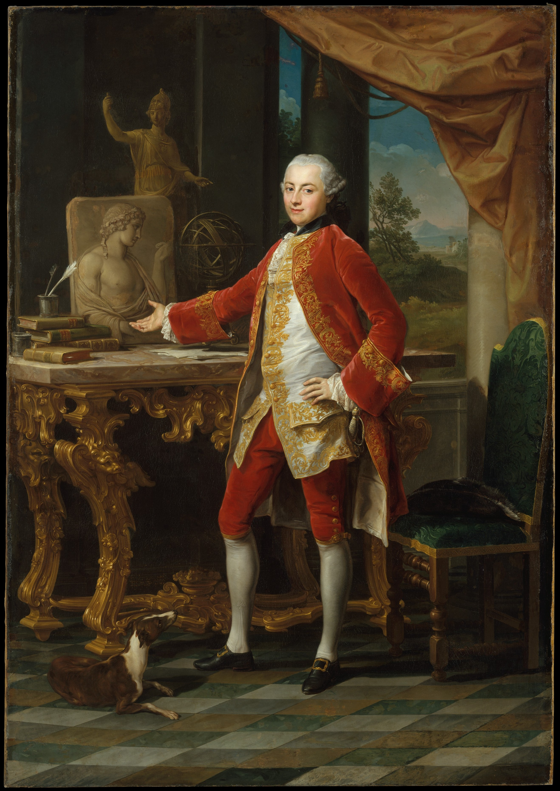
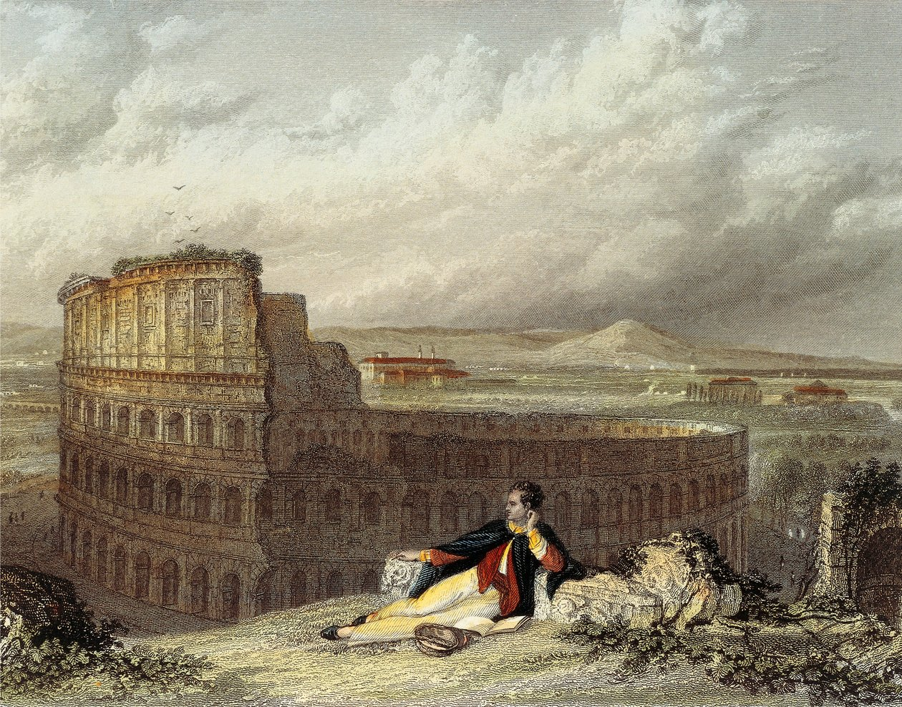
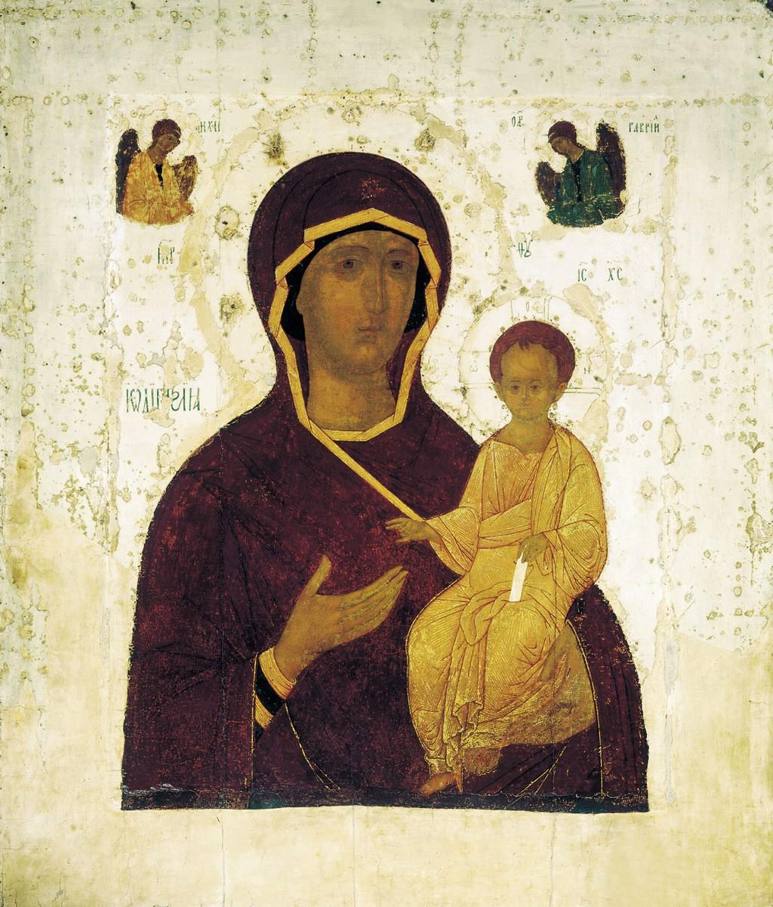
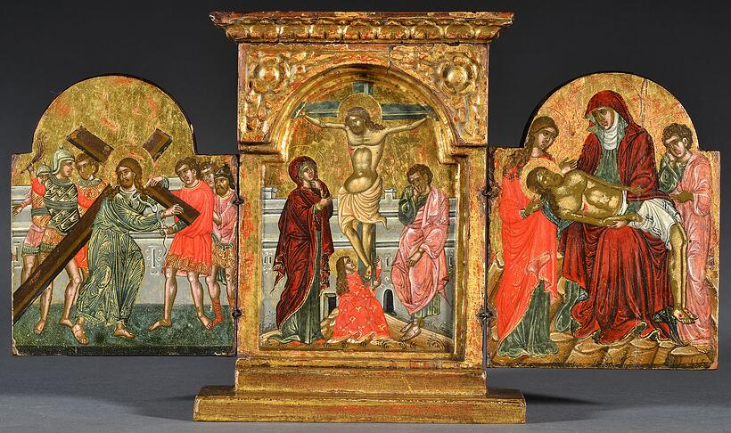
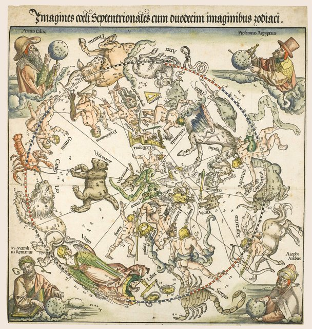
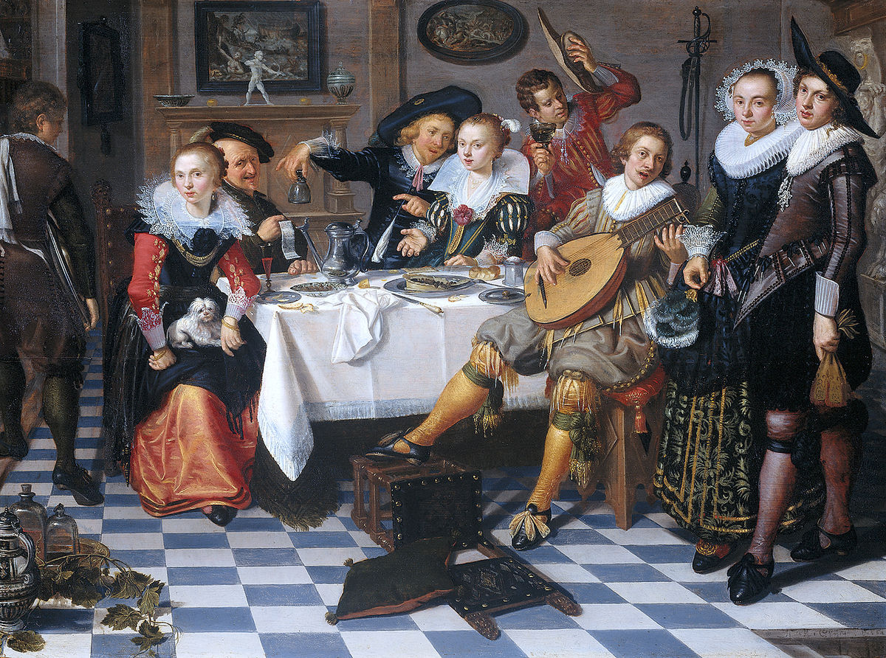
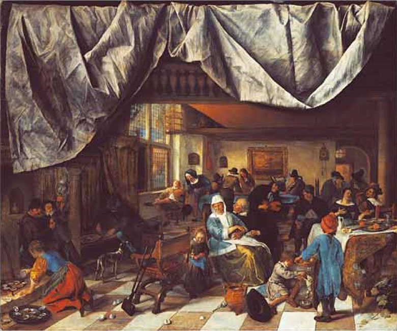

In the eighteenth century and into the early part of the nineteenth, considerable numbers of aristocratic men, and sometimes women, travelled across Europe in pursuit of education, social advancement, and entertainment on what was known as the Grand Tour. A central objective was to gain exposure to the cultures of classical antiquity, particularly ancient Greece and Rome. The practical realities of eighteenth century travel shaped the experience from the outset. In 1778, passports had to be signed personally by the monarch, though after 1794 this duty passed to the Secretary of State.
Italy formed the heart of the Grand Tour experience. No trip to Florence was complete without a visit to the Uffizi Gallery, one of the world's first modern museums, which housed the art collection gathered by the powerful Medici banking family. These encounters with Renaissance and classical art proved transformative for many travellers. Young artists willing to make the journey could learn the chiaroscuro techniques mastered by Caravaggio and work alongside leading Italian artists living in Rome. Among these, Pompeo Batoni was perhaps the best known, and he specialised in painting portraits of English milordi to such an extent that 175 out of his 225 known portraits depicted British tourists.
Batoni's Portrait of a Young Man - The Metropolitan Museum of Art
The Grand Tour was not merely about aesthetic appreciation; it also fostered scientific enquiry. The Scottish baronet Sir John Hall of Dunglass left Edinburgh University for his Grand Tour, travelled to Italy, and observed lava flows on Mount Etna whilst studying the effects of erosion. This enabled him to develop his ideas about the formation of the Earth. He went on to become one of Scotland's most important geologists and was made President of the Royal Society of Edinburgh.
The passion for collecting that characterised the era complemented this spirit of enquiry. In the seventeenth century it had become standard for educated gentlemen to maintain what was known as 'a cabinet of curiosities' containing everything from historical artefacts to fossils, medals, and natural specimens. The physician Hans Sloane exemplified this magpie tendency, and by the time he handed over his collection to the nation to form the backbone of the British Museum when it opened in 1759, it consisted of some 71,000 items.
Those who undertook the Tour often returned to Britain wearing what were known as 'macaroni fashions', extravagant Continental styles that mixed European affectations with British dress. The term 'macaroni' was actually pejorative, referring to those who dressed, spoke, and behaved in an unusually epicene and androgynous manner. The macaronis became stereotyped in British society as symbols of inappropriate bourgeois excess, effeminacy, and possible homosexuality, which was then legally viewed as sodomy and punishable by death. Despite, or perhaps because of, this controversial reputation, macaroni fashion represented a visible marker of Continental sophistication amongst those who had experienced the Grand Tour.
Less salubrious was another consequence of travel. The result of extensive promiscuity abroad was an epidemic of sexually transmitted diseases brought back to Britain, where effective treatments did not exist. As a result, syphilis and gonorrhoea were rampant throughout the Georgian period.
The last decades of the eighteenth century saw a proliferation of published writing on 'Tours', creating a literary culture around European travel. Yet no writer would prove more influential than Lord Byron, whose 'Childe Harold's Pilgrimage', published between 1812 and 1818, fundamentally transformed how tourists experienced Europe. It is no exaggeration to say that whenever nineteenth century tourists saw the Colosseum, they saw it through Byron's eyes and coloured by his sentiments. The autobiographical 'I' of 'Childe Harold's Pilgrimage' is so prominent and so attractive that it shaped an entire generation's perception of European landmarks. An imaginary portrait of Byron in front of the ruins of the Colosseum was made by William Westall and circulated extensively in the form of an engraving, whilst Byron's verse was very extensively quoted in the most important guidebook of the day, Murray's Handbook, which made it easy for tourists to visit Rome with Byron's poem stuffed in a pocket.
Westall's portrait of Byron
Reading Byron's Childe Harold's Pilgrimage, Canto IV, also served as a way of contemplating the ruins of Europe in the aftermath of the Napoleonic Wars, which ended in 1815. The poem became a meditation on multiple endings: the neoclassical ideals of the Enlightenment, the utopian ambitions of the French Revolution, the grandeur of the Napoleonic Empire, and the restoration of European monarchies through what Byron regarded as a deeply corrupt peace settlement made by the triumphant alliance post Waterloo.
The spirit of questioning and transformation unleashed by European travel extended beyond the aesthetic realm. Women, previously largely excluded from the Grand Tour, started to question the straitjackets imposed on them and to demand greater rights and freedoms: the right to vote, freedom to think and to express opinions, freedom to travel. The logical conclusion of this movement was the decision by Mary Wollstonecraft to move to Paris to experience the excitement of the period of change associated with the French Revolution. She ended up writing A Vindication of the Rights of Woman in 1792, a text that would become foundational to feminist thought.
The Grand Tour, then, was far more than a leisure activity for wealthy young men. It was an engine of cultural transformation that shaped British architecture, art, science, literature, and even social reform. The classical education it provided, the artistic inspiration it offered, and the spirit of enquiry it fostered left an indelible mark on upper-class British society that extended well into the nineteenth century and beyond.
Byzantine iconography occupies a central place in the spiritual and artistic life of the Christian Orthodox world. Its importance is rooted in the history of the Great Schism of 1054, the moment Christianity formally split into two branches. On one side stood the Roman Catholic Church led by the Pope in Rome. On the other stood the Orthodox Church led by the Patriarch of Constantinople. The division involved political rivalry and doctrinal difference, notably the question of whether the Holy Ghost proceeds from both the Father and the Son or from the Father alone.
Orthodox Christians prostrate themselves before icons, make the sign of the cross before them, kiss them, burn incense and light candles in front of them, carry them in procession and keep them in their homes. Icons are not decorative objects but protective presences and watchful eyes. Standing before an icon is understood as standing before the saint or the scene it represents and partaking in the event depicted.
The early Church was wary of images. Roman persecutions had forced some Christians into ritual contact with pagan idols and the Old Testament forbids making graven images in passages such as Exodus 20:4 5 and Leviticus 26:1. The eighth century controversy known as Iconoclasm turned these anxieties into a political and theological struggle. Imperial support for icon destruction prevailed from 726 to 787 and again from 815 to 843. Iconophiles defended icons by arguing that an icon is a channel of divine grace and that the honour shown to the image passes to the prototype. Eventually, the Eighth Ecumenical Council asserted that the veneration of Christ's icon is necessary to behold His form at the Second Coming.
When Iconoclasm officially ended in 843, the Church commemorated the victory with the Feast of the Restoration of Orthodoxy. Those who defended icons were celebrated as saints. Among the enduring subjects of devotion the Virgin and Child reign supreme. This popularity is linked to the belief that the very first image of the Virgin and Child was painted by Saint Luke. That original was regarded as an "acheiropoietos" - not made by ordinary hands, and later images were treated as descendants of that first life portrait. The Hodegetria is arguably the most famous single icon type. Its name came from the monastery of the Hodegoi in Constantinople where the purported original was kept. From the eleventh century onwards sources identified the Hodegetria with Luke's acheiropoietos. That celebrated image was lost when Constantinople fell to the Ottomans in 1453.
The Hodegetria is characterized by Mary's head inclining toward Jesus, who raises his hand in a blessing gesture
After the Fourth Crusade captured Constantinople in 1204, the Byzantine Empire was broken apart and some regions, including Crete, came under Latin and later Venetian control. This created a mixed cultural environment in which Greek Orthodox and western Christian artistic traditions interacted closely. As a result, Cretan artists began producing icons that combined traditional Byzantine features with western imagery. One example is a portable triptych that keeps the solemn and formal Byzantine style but includes three scenes that come from western art. The Crucifixion and the Carrying of the Cross are shared by both traditions, but the Pieta with the Virgin in a white headscarf, the Flagellation, which is almost never shown in Byzantine art, and the Resurrection with Christ stepping out of His tomb are all western subjects. The historian Giuseppe Gerola noted that many Venetian households owned icons, which shows how widely these Cretan hybrid works were appreciated in the west.
Portable triptych (Cretan) with the Crucifixion, the Resurrection and scenes from the Passion of Christ, late 16th century, tempera on panel, 18.3 x 33 cm
Receptions of Byzantine icons have shifted markedly. In the sixteenth century the Italian writer and artist Giorgio Vasari published 'Lives of the Painters, Sculptors and Architects', a foundational text of Renaissance art history. In this work he described Byzantine art as crude and lifeless, claiming that Giotto had rescued painting by replacing what he called an obscure Byzantine manner, with a more natural and graceful Latin one associated with emerging Italian Renaissance naturalism. El Greco, who began his career as a Cretan icon painter before becoming a major figure in western art, rejected Vasari's view. In the margins of his own copy of 'Lives of the Painters, Sculptors and Architects' he defended the Byzantine style as intellectually demanding and technically refined.
The Venetian Renaissance emerged from a city whose prosperity and identity were shaped by extensive trade across the Mediterranean and beyond. Venetian merchants travelled on routes that reached as far as China, importing spices, sugar and alum. The diversity of Venice's trading partners influenced not only its economy but also its cultural character. Paul Wood identifies Venice as one of the most culturally diverse cities in Europe, a fact vividly reflected in its art.
Venetian art developed differently from that of Florence. While Florentine artists emphasised form, design and intellectual clarity, Venetians privileged colour and sensory appeal. Their paintings sought emotional expression through colour and brushwork. Environmental conditions contributed to this aesthetic. The misty atmosphere of the lagoon and the flickering light on water sharpened Venetian sensitivity to colour, while the damp climate made fresco painting impractical.
Early fifteenth century Venetian painting combined local Byzantine heritage with the International Gothic style. Gothic taste valued surface decoration, linear elegance and luxurious visual effects rather than the spatial realism pursued in Florence. Gold, which Florentine artists rejected, remained extremely popular in Venice. Technical innovations gradually transformed Venetian practice. Northern oil painting techniques, developed by Jan van Eyck, reached Venice through trade routes. The visit of Antonello da Messina in fourteen seventy five and fourteen seventy six accelerated the adoption of oil painting, and Giovanni Bellini mastered the medium by fourteen seventy four or fourteen seventy five. Venetian artists therefore fused modern techniques with traditional forms, creating a distinctive identity.
As Rosamond Mack explains, European artists often relied on a small number of authentic visual sources when painting other cultures, which created a limited vision of the world beyond Europe. Sometimes motifs drawn from these regions were used positively, as in Dürer's Map of the Northern Sky, which honours the Islamic astronomer Azophi Arabus. At other times they were used negatively, as in the Martyrdom of Saint John where turbaned figures appear among the tormentors.
Dürer's Map of the Northern Sky
The wealth of cultural interaction also appears in Bellini's Procession in the Piazza San Marco of 1496. The work displays the architecture of San Marco with its Byzantine domes and golden mosaics, combined with northern Gothic pinnacles and pointed arches. The Doge's Palace shows clear influence from artistic traditions associated with Islamic lands in its decorative tilework. The absence of defensive walls emphasised the security and confidence of the Republic. Painted for the Scuola Grande di San Giovanni Evangelista, the picture presents an ordered procession and a cross section of Venetian society, including citizens, German merchants, Greek merchants in black brimmed hats and Turks in turbans. Women appear in windows, some veiled in a manner associated with Islamic custom, and many balconies are draped with fine carpets imported from the eastern Mediterranean. The Doge appears modestly among the crowd. The painting forms part of a cycle commemorating miracles of the True Cross. The relic, gifted to the confraternity by the Grand Chancellor of Cyprus and originally from the Patriarch of Constantinople, is carried through the square. A merchant from Brescia kneels as the relic passes and his son is miraculously healed. The scene shows divine presence within the diverse life of Venice.

Bellini's Procession in the Piazza San Marco
Carpaccio's Saint George series created for the Scuola di San Giorgio degli Schiavoni between 1500 and 1508 explores Venice's imaginative engagement with the wider world. The series contributed to the Myth of Venice, which presented the Republic as powerful and divinely favoured. These works depict imagined settings inspired by the Mamluk territories of Syria and Egypt, populated by camels, monkeys, giraffes and architectural forms drawn from travellers' descriptions. Although this visual mode emerged partly in response to the expanding Ottoman Empire, artists avoided portraying contemporary Ottoman society directly. Instead they placed early Christian legends in a partly factual, partly invented Mamluk landscape. In 'The Triumph of Saint George' a diverse crowd watches the Christian knight defeat the dragon, a symbol of pagan unbelief. In 'Saint George Baptising the Pagans' musicians wear Mamluk clothing while newly baptised converts cast aside their elaborate headgear. These scenes carried particular resonance in a period when Venice perceived Ottoman expansion as a significant threat.

Carpaccio's The Triumph of St George
The early seventeenth century marked the Dutch Golden Age, when the Republic became a major centre of trade, shipping, finance, science, technology and culture. Unlike their absolutist Catholic neighbours, the Dutch had decentralised governance, strong local identities in cities such as Amsterdam, Utrecht and Delft, and a Calvinist state religion that influenced art production through the banning of church images. Highly urbanised yet still agriculturally productive, the Republic lacked large state or church commissions, encouraging a commercial art market dominated by portable easel paintings that were affordable and widely collected.
Between 1640 and 1659, an estimated 1.3 to 1.4 million paintings were produced in a population of around two million. Paintings were common in even modest homes and affordable to the middle classes. The open market encouraged specialisation, with artists focusing on landscapes, still life, or depictions of specific fabrics or animals. Joshua Reynolds notes repetitive motifs, such as ter Borch’s satin dresses and Weenix’s game birds. He criticises Dutch art for being merely imitative and overly focused on truthful representation of everyday objects, lacking the elevated, inventive subjects of the academic ‘grand style’. Other thinkers are more appreciative: G.W.F. Hegel praises Dutch art as an expression of the Republic’s civic freedom, valuing its focus on ordinary life and arguing that mundane subjects draw attention to artistic skill and the painting as an artwork in its own right.
Most Dutch art treatises followed Italian academic theory and shed little light on genuinely Dutch artistic concerns. Philips Angels’ 'Praise of Painting' (1642) is therefore unusually important because it celebrates painting for its ability to imitate everything visible in nature rather than for conveying moral messages or higher knowledge. Angels lists the astonishing range of things painting can depict - textures, creatures, metals, weather effects - highlighting a core Dutch interest in detailed, faithful representation.
The late-twentieth-century “iconological turn” offered an alternative to realist interpretations by treating Dutch paintings as vehicles of meaning. Iconologists analyse subject matter through historical context, texts and cultural ideas rather than focusing on style or naturalism. Building on Panofsky’s Studies in Iconology (1939), which decoded symbolic and allegorical meanings in Renaissance art, de Jongh applies Panofsky’s idea of “disguised symbolism” to seventeenth-century Dutch painting. De Jongh identifies two key features of Dutch culture: a pervasive Calvinist moralising impulse that emphasised virtue and the fleeting nature of worldly pleasures, and a cultural taste for wordplay, metaphor and riddles, especially visible in popular emblem books, which offered multiple layered meanings for everyday motifs. Drawing these elements together, de Jongh argues that Dutch art embodies schijnrealisme, or “seeming realism”: paintings that imitate real life in form but simultaneously communicate abstract, symbolic or moral ideas.
For example, in Isaac Elias’ 'Merry Company' (c.1620), a seemingly casual social gathering hides moral meanings. Finely dressed figures eat, drink and socialise, yet two small paintings on the wall, the Deluge and a battle scene, act as moral admonitions, reminding viewers of divine punishment and life’s ethical struggles. The standing couple on the right faces the viewer and is interpreted as a betrothed or married pair confronted with temptations symbolised around them. The diners function as an allegory of the Five Senses, each linked in Dutch culture to potential sins, serving as a moral mirror warning both the couple and the viewer against indulgence in worldly pleasures.
Isaac Elias’ Merry Company
In Jan Steen’s 'The So-Called Brewery of Jan Steen (The Life of Man)' (late 1660s), de Jongh argues that a small motif of a boy blowing bubbles beside a skull refers to the memento mori theme homo bulla, symbolising the brevity and fragility of human life, and functions as the interpretive key to the whole work.
Jan Steen’s The So-Called Brewery of Jan Steen (The Life of Man)
Schama also criticises naïve realism, yet highlights the innovative pictorial character of early Dutch landscapes, which uniquely depict dunes, scrub vegetation, wind-bent trees and humble dwellings with new intimacy and sensitivity to local terrain. He links this approach to Dutch patriotism, arguing that affection for local scenery grew from the fight for independence and extensive land-reclamation projects, which fostered pride in the nation’s newly shaped homeland.
Interestingly, Goedde argues that Dutch landscapes are cultural constructions rather than literal records of nature. His study of storm and shipwreck paintings shows that hundreds of surviving works follow only six standard compositional types, each with fixed arrangements, lighting, settings, and incidents. These range from ships caught in sudden squalls to near-shore wrecks and post-wreck scenes of survivors. Comparing these works with real maritime accounts highlights how selective and formulaic painted depictions actually were, revealing the limits of Dutch realism.